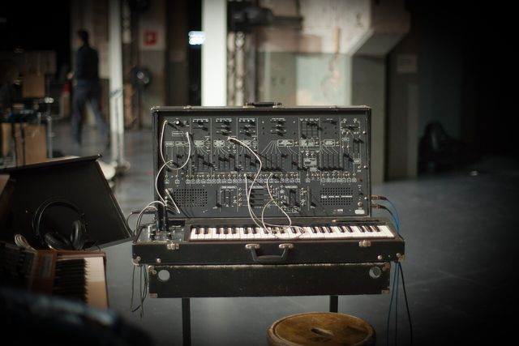

Scheda 010 · 1971 · Massachusetts, USA
ARP 2600
La valigia che ha dato la voce a R2-D2
Semi-modulare, con gli altoparlanti dentro: il synth pensato anche per le scuole.
Il suono vero · 0:42
Un ARP 2600 vero: i 3 oscillatori su una scala esatonale, il filtro mosso a mano.
0:00 / 0:42
Registrazione di jonopodmore · CC BY 4.0 · Freesound · estratto di 42 s, volume normalizzato
- ANNO
- 1971
- COSTRUTTORE
- ARP
- OSCILLATORI
- 3 VCO
- LISTINO
- 2.600 $
La macchinaChe cos'è
Una valigia che si apre e diventa un laboratorio. È semi-modulare: i moduli sono già collegati fra loro, e i cavi servono solo se vuoi cambiare le regole. Ha gli altoparlanti incorporati e un riverbero a molla, perché ARP lo vendeva anche a scuole e università: bastava aprirlo sulla cattedra e l'aula sentiva.
Chi l'ha costruitaAlan R. Pearlman
Le sue iniziali sono il nome della ditta: A.R.P. Ingegnere elettronico con un passato nei circuiti per la NASA, progettò il 2600 con Dennis Colin. Il primo filtro, il 4012, ricalcava da vicino il ladder brevettato da Moog: sotto minaccia di azione legale — mai una causa vera in tribunale — ARP dovette riprogettarlo da capo.
Come funzionaCosa c'è dentro
Tre oscillatori, filtro, inviluppi e amplificatore già cablati in fila: si accende e suona, senza toccare un cavo. Ma sopra ogni modulo ci sono i jack, e lì comincia il gioco: puoi far comandare il filtro dall'inviluppo, o dal rumore, o da sé stesso. Il sample & hold e il filtro in auto-oscillazione sono le due manopole da cui è uscita mezza fantascienza.
Chi l'ha usataNei dischi
- Edgar Winter«Frankenstein» (1972): se lo mise a tracolla, inventando il keytar
- Joe Zawinuldue ARP 2600 nei Weather Report di «Black Market» (1976)
- Jean-Michel Jarreil tema di «Oxygène IV» (1976)
- Stevie Wondertra i primi: il suo pannello era etichettato in Braille
Da ascoltare
Edgar Winter, «Frankenstein» (1972)
Il synth che Winter si mise a tracolla per suonarlo in piedi: quel riff è un ARP 2600.
L'aneddotoUna storia
1977: Ben Burtt deve dare una voce a un robot che non parla. Prende un ARP 2600, ci mescola la propria voce e ottiene un suono «per metà elettronico e per metà umano». Quel pianto acuto che tutti riconoscono — R2-D2 — è mezzo circuito e mezzo essere umano. Ci mise sei mesi.
Avvertenze
Funziona senza collegare un solo cavo. Diventa interessante solo quando ne colleghi qualcuno.
Il reel
La versione corta
Le cose da sapere in fila, una schermata alla volta, col suono della macchina quando ne esiste una registrazione libera. Aprilo su Instagram ↗
Il carosello
Le 6 tavole


Da dove viene
Fonti
- «ARP 2600» — Wikipedia (EN) verificata il 2026-08-26
- «Hardware Wars: the gear behind Star Wars» — Attack Magazine verificata il 2026-08-26
- «The ARP 2600: Evolution and Revolution» — Alan R. Pearlman Foundation verificata il 2026-08-26
- «Frankenstein» (Edgar Winter) — Wikipedia (EN) verificata il 2026-08-26
Foto: Ville Hyvönen · CC BY-SA 2.0 · Wikimedia Commons
Suono: Registrazione di jonopodmore · CC BY 4.0 · Freesound · estratto di 42 s, volume normalizzato